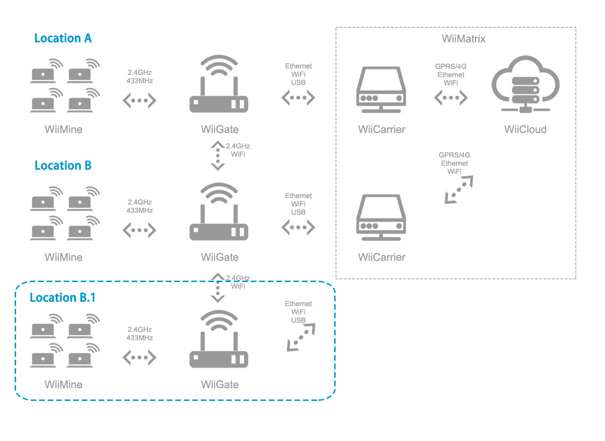

WiiMesh 无线组网
WiiMesh是一种无线网络，它让分布在监控现场的传感器、网关、服务器能够相互通信。

WiiMesh包含以下组件：
- WiiMine：传感单元，负责数据采集、状态监测；
- WiiGate：无线网关，负责信号中继和网络协议转换；
- WiiCarrier：现场服务器，部署在现场，实现分布式计算和存储；
- WiiCloud：云端服务器，包含数据计算、储存、消息推送等功能；
- WiiMatrix：算法与分析（纯软件），运行于WiiCarrier和WiiCloud；
- Mobiles & displays：用户终端，包含各类移动设备和显示设备；
应用领域
- 适用于大范围的信号覆盖和监控：
- 机械设备状态监控；
- 农业、气候等环境监控；
- 物流、仓储等货品监控；
- 企业资产监控；
优势与特性
- 支持433MHz/2.4GHz/蓝牙/WiFi；
- 大范围、远距离、多节点无线通信；
- 自动组网，分布式计算，易于维护；
- 低功耗设计，续航时间1年以上；
- 可防水、防爆、耐低温；
网络拓展
WiiMesh具有十分灵活的网络拓展方式。
比如，现要对区域B建立传感器网络，只需在区域B部署WiiMine（传感单元）、WiiGate（无线网关）、WiiCarrier（现场服务器）即可：

假设区域B.1中有部分WiiMine的信号不理想（信号干扰、衰减等原因），只需在该区域新增WiiGate即可：
WiiGate的作用类似蜂窝移动通信中的基站，在WiiMine密集的地区，通过增加WiiGate进行扩容，在WiiMine稀疏的地区，通过部署WiiGate以建立连接。一般情况下，一台WiiGate可以支持200个WiiMine。
WiiMesh包含了设备发现、加入组、生成树、路由等组网协议，所以，新部署的设备能够自动组网，无需人工干预。
长距离通信
当监控区域之间相隔很远，为了增加通信距离，在WiiGate、WiiCarrier上采用定向天线。
定向天线具有较高的增益，可以使通信距离增加300~2000米。

分布式计算
传感器每天产生大量的数据，如果这些数据都上传云端，将需要庞大的流量和带宽。
为了解决这一问题，引入“现场服务器”的概念。WiiCarrier是小型/微型的服务器，具有一定的计算和存储资源，它同WiiMine、WiiGate一起部署在现场。WiiMine采集的数据先经WiiCarrier处理，再将处理的“结果”交付云端（WiiCloud），以此节省流量和带宽费用。
WiiMatrix运行于WiiCarrier和WiiCloud之上，它是一个分布式的计算体系，可以让各个WiiCarrier和WiiCloud协同工作。

管理和运维
WiiMesh是一个复杂系统，我们尽量让它的管理/运维工作“轻量化”，这体现在几个方面：
- 无线组网：在组网的时候，WiiMesh可以自动地增减设备、设定角色、选择路由等；
- 设备管理：可以方便地查看状态（如电量）、设置参数（如采样率）或进行空中升级等；
- 数据备份：只需要插上U盘，就可以对WiiCarrier上的分布式数据库进行备份或还原；
- 消息推送：支持多种渠道的消息推送，如微信、邮件、短信，让用户及时收到状态更新；
- 紧急情况：WiiGate/Carrier有备用电源，就算现场完全掉电，仍可持续监控和推送消息；
| 名称 | 内容 |
|---|---|
| 传输距离 | 2.4GHz/BLE: 0.5-15m; 433MHz: 30-1000m;（无PA） |
| 天线规格 | 2.4GHz, 433MHz |
| 天线增益 | 10~24dBi（可配） |
| 续航时间 | 1年以上（WiiMine的典型值） |
| 工作温度 | -20℃-+90℃ |
| 安全加密 | AES 128bit |
| 同步采样 | 支持 |
| 数据上传 | 每小时一次（典型值） |
| 多跳（multi-hop） | 支持 |
| 最大节点数 | 65535 |
| 组网协议 | 设备发现、生成树、路由等协议 |
| 传输速率 | 250Kbps（典型值） |
| 消息推送 | 微信、电邮、短信 |
| 移动网络 |
2G/3G/4G |
| 空中升级 | 支持 |
（略）